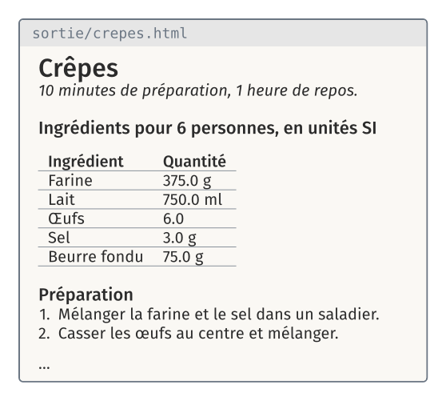
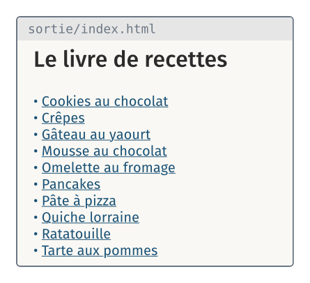

TD 7a — Compléter un projet GitHub, par des pull requests#
Note
Les fichiers des TD de la séance sont dans l’archive info01-cours7_v1.zip.
Le TD part d’un dépôt GitHub publié par le module, td7a-recette, le même
pour tous : il contient le programme recette.py du corrigé du TD 4a, avec
son historique. Le TD ajoute de nouvelles fonctions à ce programme. Au
départ, le programme calcule les ingrédients d’une recette pour un nombre de
personnes et les écrit dans un fichier CSV. À la fin du TD, il
écrit aussi, pour chaque recette, une page HTML qui réunit le texte de la
recette et le tableau des quantités calculées, puis un sommaire qui relie
ces pages, comme un livre de recettes.


Le TD ajoute ainsi deux fonctionnalités au programme : générer la page HTML
d’une recette (étapes D1 et D2), puis générer les pages HTML de toutes les
recettes et leur sommaire (étapes D3 et D4). Vous développez chacune sur sa
propre branche, puis vous l’ajoutez à master par une pull request,
fusionnée sur le site de GitHub.
Le guide donne les modifications du programme par blocs. Les lignes en
vert, entre deux lignes +++, sont à ajouter : les copier telles quelles,
sans les lignes +++. Les lignes en rouge, entre deux lignes ---, sont à
supprimer. Les autres lignes ne changent pas et indiquent l’endroit : le
nombre qui les précède est le numéro de la ligne dans VS Code, quand les
modifications sont faites de haut en bas.
Étape |
Objectif |
|---|---|
copier le dépôt de départ sur son poste puis son compte GitHub, lancer le programme (test) |
|
écrire la page HTML d’une recette : ajout de la liste d’ingrédients, conversion HTML |
|
proposer la branche par une pull request |
|
générer les pages de toutes les recettes avec un seul appel de commande |
|
écrire une page d’index des recettes ; deuxième pull request |
|
D5 (bonus) |
publier les pages avec GitHub Pages |
Au début de la séance#
Le compte GitHub du cours 6.
L’archive
info01-cours7.zip, copiée depuisformationTempsur le Bureau, puis extraite : clic droit, Extraire tout, en effaçant la fin du dossier proposé,\info01-cours7. Le dossier extrait estDesktop\cours7.
Ouvrir le dossier cours7/7a_recette/ dans VS Code, puis un terminal Git Bash
(menu Terminal, New Terminal ; flèche à côté du +, Git Bash).
Aide-mémoire Python#
Les tableaux suivants rappellent les instructions Python dont le TD a
besoin, avec le TD où elles ont été vues et un lien vers la documentation
officielle de Python. Chaque module s’importe en tête du programme :
import argparse, import shutil, import subprocess,
from pathlib import Path.
Chaînes de caractères (TD 3c, TD 3f, TD 4a). Documentation :
le texte, dans le tutoriel,
les méthodes des chaînes,
round.
Instruction |
Effet |
|---|---|
|
met les chaînes bout à bout : |
|
ajoute |
|
le caractère de fin de ligne |
|
le nombre arrondi à un chiffre après la virgule : |
|
une copie de |
|
une copie de |
|
une copie de |
Chemins, module pathlib (TD 3b). Documentation :
pathlib.
Instruction |
Effet |
|---|---|
|
le dossier du programme : |
|
un chemin, construit dossier par dossier |
|
pour |
|
le même chemin, avec une autre extension : |
|
les chemins du contenu de |
|
crée le dossier, s’il n’existe pas déjà |
Fichiers texte (TD 3c, TD 3f). Documentation :
lecture et écriture de fichiers,
read_text,
write_text.
Instruction |
Effet |
|---|---|
|
ouvre le fichier en lecture ; Python le referme à la fin du bloc |
|
la ligne suivante du fichier, fin de ligne comprise |
|
le texte du fichier, de la position de lecture jusqu’à la fin |
|
tout le texte du fichier, sans |
|
écrit |
Options de la ligne de commande, module argparse (TD 3f, étape B6 du
TD 4a). Documentation : tutoriel argparse.
Instruction |
Effet |
|---|---|
|
crée l’analyseur de la ligne de commande |
|
un argument positionnel, obligatoire : |
|
une option avec une valeur, convertie en entier, 4 par défaut : |
|
une option sans valeur, nouvelle dans ce TD : |
|
lit la ligne de commande ; |
Programmes externes et copie de fichiers, modules subprocess et
shutil (TD 3b, TD 3f). Documentation :
subprocess.run,
shutil.copy.
Instruction |
Effet |
|---|---|
|
lance pandoc, comme la commande |
|
copie le fichier |
D0 · Récupérer le projet GitHub initial#
À faire : créer sur votre compte GitHub un dépôt vide
td7a-recette; cloner danstravail/recette/le dépôt de départ du module, puis l’envoyer vers votre nouveau dépôt GitHub ; régler votre nom et votre adresse pour ce dépôt.À obtenir : la page GitHub de votre dépôt
td7a-recetteafficherecette.pyet les commits du TD 4a ; lancée depuis le dossiertravail/recette/, la commandepython recette.py crepes -p 6écritsortie/crepes_6_SI.csv.
Le dépôt de départ, td7a-recette, est sur le compte GitHub du module,
geodata-ing1-info-01. Vous faites le TD dans une copie de ce dépôt, sur
votre compte : vous y poussez vos branches et y fusionnez vos pull requests.
Sur votre compte GitHub, créer un dépôt vide nommé td7a-recette (New
repository, sans README). Puis, en remplaçant <compte> par le nom de votre
compte GitHub :
cd travail
git clone git@github.com:geodata-ing1-info-01/td7a-recette.git recette
cd recette
git remote set-url origin git@github.com:<compte>/td7a-recette.git
git push -u origin master
Le dernier argument de git clone nomme le dossier local recette.
git remote set-url change l’adresse du dépôt distant origin : les
git push suivants envoient vos commits vers votre nouveau dépôt.
Régler ensuite votre nom et votre adresse pour ce dépôt :
git config user.name "Prénom Nom"
git config user.email "prenom.nom@exemple.fr"
Vérification : lancée depuis le dossier travail/recette/, la commande
python recette.py crepes -p 6 affiche
crepes pour 6 personnes, en unités SI
Farine : 375.0 g
Lait : 750.0 ml
Œufs : 6.0
Sel : 3.0 g
Beurre fondu : 75.0 g
écrit : C:\Users\eleve\Desktop\cours7\7a_recette\travail\recette\sortie\crepes_6_SI.csv
D1 · Générer la page HTML d’une recette#
À faire : sur une branche
page: modifier le programme pour qu’il complète le texte de la recette par le tableau des ingrédients (D1.1), puis convertisse ce texte en page HTML en appelant pandoc, avec une feuille de style (D1.2) ; faire un commit à la fin de D1.1 et à la fin de D1.2.À obtenir :
python recette.py crepes -p 6 --pageécritsortie/crepes.md, puissortie/crepes.html, la page de la figure du début du guide.
Au départ, recette.py écrit les quantités d’une recette dans un fichier
CSV. L’étape D1 modifie ce programme pour qu’il écrive aussi la page HTML
de la recette, celle de la figure du début du guide. Cette page réunit
deux choses : le texte de la recette (le titre, le temps de préparation,
les étapes), écrit à la main dans un fichier Markdown, et le tableau des
ingrédients, que le programme calcule déjà. Les fichiers Markdown des
recettes sont fournis dans le dossier depart/recettes/ du TD,
cours7/7a_recette/depart/recettes/, hors du projet.
Les modifications à faire, dans l’ordre :
Copier le texte des recettes du dossier
depart/recettes/du TD dans le dossierrecettes/du projet, un fichier Markdown par recette. Ce texte sert de modèle : sa section## Ingrédientsest vide, et le programme la remplit.Écrire une fonction,
tableau(ingredients), qui reçoit la liste des ingrédients et renvoie leur tableau Markdown, sous forme de texte.Écrire une fonction,
ecrire_markdown(nom, personnes, unites, ingredients). Elle reçoit le nom de la recette ("crepes"), le nombre de personnes et le système d’unités ("SI"ou"US"), qui servent au titre de la section, et la liste des ingrédients. Elle lit le texte de la recette,recettes/<nom>.md, place le tableau sous## Ingrédients, écrit le résultat danssortie/<nom>.md, et renvoie le chemin de ce fichier.Modifier le programme principal pour qu’il écrive ce texte complété, seulement quand la commande porte une nouvelle option,
--page:python recette.py crepes -p 6 --page. Sans l’option, le programme fait ce qu’il faisait avant. Une option sans valeur, comme--page, est décrite dans la documentation d’argparse, partie « Introduction aux arguments optionnels ».Écrire une fonction,
ecrire_page(markdown), qui reçoit le chemin du texte complété, le convertit en page HTML avec pandoc, et renvoie le chemin de la page.Ajouter une feuille de style,
style.css, qui fixe la présentation de la page : polices, couleurs, largeur du texte, bordures du tableau.ecrire_pagecopie ce fichier danssortie/, à côté de la page, avec la fonctionshutil.copy(TD 3f), décrite dans la documentation deshutil.copy.
Les modifications 1 à 4 forment l’étape D1.1, les modifications 5 et 6
l’étape D1.2. Créer d’abord une branche, page, pour y faire les six
modifications :
git checkout -b page
Essayer avant de regarder la solution. Pour chaque modification, lire d’abord son explication, puis écrire le code soi-même avant de regarder le bloc qui indique la solution. Les cours précédents présentent tout ce dont ce code a besoin : la liste de tuples des ingrédients et les fonctions (TD 4a), la lecture et l’écriture d’un fichier texte (TD 3c),
argparse(TD 3f, et étape B6 du TD 4a), pandoc lancé parsubprocess.runet la copie d’un fichier parshutil.copy(TD 3f). L’aide-mémoire Python, au début du guide, résume ces instructions. La solution sert ensuite à vérifier votre code, ou à avancer si votre essai n’aboutit pas.
D1.1 Ajouter le tableau des ingrédients au texte de la recette#
Les deux nouvelles fonctions lisent le texte d’une recette, y ajoutent le tableau de ses ingrédients, et écrivent le texte complété. Les paragraphes suivants montrent ces données sur l’exemple des crêpes, pour 6 personnes en unités SI.
Le texte de la recette. Le texte de chaque recette est fourni dans le
dossier depart/recettes/ du TD, un fichier Markdown par recette. Le texte
des crêpes :
# Crêpes
*10 minutes de préparation, 1 heure de repos.*
## Ingrédients
## Préparation
1. Mélanger la farine et le sel dans un saladier.
2. Casser les œufs au centre et mélanger.
3. Verser le lait **peu à peu**, sans cesser de remuer.
4. Ajouter le beurre fondu.
5. Laisser reposer une heure.
6. Cuire dans une poêle chaude, une minute par face.
> La pâte se conserve 24 heures au réfrigérateur.
Sa section ## Ingrédients est vide : la fonction ecrire_markdown y
placera le tableau des ingrédients.
La liste des ingrédients et son tableau Markdown. Dans le programme,
les ingrédients d’une recette sont une liste de tuples, un tuple par
ingrédient : son nom, sa quantité et son unité. lire_ingredients lit
cette liste dans le fichier CSV, puis adapter et convertir en
recalculent les quantités. Pour les crêpes, la liste ingredients vaut :
ingredients = [
("Farine", 375.0, "g"),
("Lait", 750.0, "ml"),
("Œufs", 6.0, ""),
("Sel", 3.0, "g"),
("Beurre fondu", 75.0, "g"),
]
L’appel tableau(ingredients) renvoie le tableau Markdown de cette liste :
deux lignes d’en-tête, puis une ligne par ingrédient, la quantité et
l’unité dans la seconde colonne :
| Ingrédient | Quantité |
|---|---|
| Farine | 375.0 g |
| Lait | 750.0 ml |
| Œufs | 6.0 |
| Sel | 3.0 g |
| Beurre fondu | 75.0 g |
Pour écrire ce texte, tableau part des deux lignes d’en-tête, puis ajoute
une ligne par ingrédient dans une boucle for. L’opérateur + met deux
chaînes bout à bout : si nom vaut "Farine", "| " + nom + " |" vaut
"| Farine |". Un nombre se convertit d’abord en chaîne avec str :
str(375.0) vaut "375.0". L’instruction texte = texte + ligne ajoute
ligne à la fin de texte. Chaque ligne se termine par "\n", le
caractère de fin de ligne (TD 3c).
Le texte complété. Pour les crêpes, l’appel ecrire_markdown("crepes", 6, "SI", ingredients) lit le texte de la recette, recettes/crepes.md.
Elle assemble ensuite le texte de remplacement : un titre,
## Ingrédients pour 6 personnes, en unités SI, une ligne vide, puis le
tableau. La méthode replace remplace la ligne ## Ingrédients du texte
de la recette par ce texte de remplacement. La fonction écrit le résultat
dans sortie/crepes.md, puis renvoie ce chemin.
Le début du texte complété :
# Crêpes
*10 minutes de préparation, 1 heure de repos.*
## Ingrédients pour 6 personnes, en unités SI
| Ingrédient | Quantité |
|---|---|
| Farine | 375.0 g |
| Lait | 750.0 ml |
| Œufs | 6.0 |
| Sel | 3.0 g |
| Beurre fondu | 75.0 g |
…
Modification 1, le texte des recettes. Copier dans recettes/ le texte
des quatre recettes qui ont déjà leur fichier CSV :
cp ../../depart/recettes/crepes.md ../../depart/recettes/pate_pizza.md recettes/
cp ../../depart/recettes/mousse_chocolat.md ../../depart/recettes/cookies.md recettes/
Chaque recette a maintenant deux fichiers : les ingrédients, en CSV, et le texte, en Markdown.
Modifications 2 et 3, les fonctions tableau et ecrire_markdown.
Ajouter les deux fonctions avant le programme principal :
69
70
+++
def tableau(ingredients):
"""Le tableau Markdown des ingrédients, une ligne par ingrédient."""
texte = "| Ingrédient | Quantité |\n"
texte = texte + "|---|---|\n"
for nom, quantite, unite in ingredients:
texte = texte + "| " + nom + " | " + str(round(quantite, 1)) + " " + unite + " |\n"
return texte
def ecrire_markdown(nom, personnes, unites, ingredients):
"""Le texte de recettes/<nom>.md, avec le tableau des ingrédients sous « ## Ingrédients », écrit dans sortie/ ; renvoie son chemin."""
source = (DONNEES / (nom + ".md")).read_text(encoding="utf-8")
intitule = "## Ingrédients pour " + str(personnes) + " personnes, en unités " + unites
remplacement = intitule + "\n\n" + tableau(ingredients)
complete = source.replace("## Ingrédients", remplacement)
markdown = SORTIE / (nom + ".md")
markdown.write_text(complete, encoding="utf-8")
return markdown
+++
91 # ---- Le programme -------------------------------------------------------------
92
Modification 4, l’option --page. action="store_true" fait de
--page une option sans valeur : options.page vaut True quand la
commande porte l’option, False sinon (documentation d’argparse, partie
« Introduction aux arguments optionnels »). Le programme
principal n’appelle ecrire_markdown que si options.page vaut True,
après l’écriture du fichier CSV :
96 analyseur.add_argument("-p", "--personnes", type=int, default=4, help="nombre de personnes (défaut : 4)")
97 analyseur.add_argument("-u", "--unites", choices=("SI", "US"), default="SI", help="système d'unités (défaut : SI)")
+++
analyseur.add_argument("--page", action="store_true", help="écrit aussi la page de la recette : son texte complété, puis sa page HTML")
+++
99 options = analyseur.parse_args()
100 NOM = options.nom
…
118 ecrire_ingredients(fichier, ingredients)
119 print("écrit :", fichier)
+++
if options.page:
markdown = ecrire_markdown(NOM, PERSONNES, UNITES, ingredients)
print("écrit :", markdown)
+++
Vérification : python recette.py crepes -p 6 --page se termine par
écrit : C:\Users\eleve\Desktop\cours7\7a_recette\travail\recette\sortie\crepes.md
Ouvrir sortie/crepes.md dans VS Code (Ctrl + Maj + V pour
l’aperçu) : il commence par le texte complété montré plus haut.
git add recettes
git commit -am "Le texte de la recette, complété par le tableau des ingrédients"
D1.2 Générer la page HTML en appelant pandoc#
La modification 5 produit la page HTML avec pandoc. La modification 6 lui donne ensuite sa présentation, par une feuille de style.
La page HTML, par pandoc. pandoc convertit un fichier Markdown en page
HTML, comme au cours 3. L’appel ecrire_page(markdown), où markdown est
le chemin sortie/crepes.md que renvoie ecrire_markdown, lance pandoc
avec subprocess.run. pandoc écrit la page sortie/crepes.html : le même
chemin, avec l’extension .html (with_suffix(".html")). ecrire_page
renvoie ce chemin. Pour les crêpes, ecrire_page lance la même commande
que celle-ci, tapée dans le terminal depuis le dossier du projet :
pandoc sortie/crepes.md -o sortie/crepes.html --standalone --metadata pagetitle="Crêpes"
ecrire_page construit cette commande pour n’importe quelle recette : elle
calcule le chemin de la page et le titre à partir de markdown. Le titre
de la page, Crêpes, vient de la première ligne du fichier, # Crêpes.
readline lit cette ligne, fin de ligne comprise (TD 3c) ; strip()
retire la fin de ligne, puis lstrip("# ") retire le # et l’espace du
début.
La feuille de style. Une page HTML décrit son contenu : un titre, des
paragraphes, un tableau. Sa présentation est décrite à part, dans une
feuille de style CSS, comme au cours 1. La feuille style.css, fournie
dans le dossier depart/ du TD, met le texte dans une colonne centrée
d’environ 70 caractères, sur un fond crème, souligne les titres de section
et aligne à droite les quantités du tableau. Les dix pages et le sommaire
partageront cette feuille : une modification de style.css changera la
présentation de toutes les pages, sans toucher à leur contenu. L’option
--css style.css de pandoc ajoute dans la page un lien vers style.css,
à la place de la mise en forme que pandoc y met par défaut. Le navigateur
cherche ce fichier à côté de la page : ecrire_page le copie donc dans
sortie/. Tapées dans le terminal, la copie et la conversion seraient :
cp style.css sortie/
pandoc sortie/crepes.md -o sortie/crepes.html --standalone --css style.css --metadata pagetitle="Crêpes"
Modification 5, l’appel de pandoc. Ajouter import subprocess, une
fonction ecrire_page, et son appel après celui de ecrire_markdown :
3 import argparse
4 import csv
+++
import subprocess
+++
6 from pathlib import Path
7
…
90
91
+++
def ecrire_page(markdown):
"""La page HTML d'un fichier Markdown de sortie/, par pandoc ; renvoie son chemin."""
with open(markdown, encoding="utf-8") as fichier:
premiere_ligne = fichier.readline()
titre = premiere_ligne.strip()
titre = titre.lstrip("# ")
page = markdown.with_suffix(".html")
subprocess.run(["pandoc", str(markdown), "-o", str(page), "--standalone",
"--metadata", "pagetitle=" + titre], check=True)
return page
+++
104 # ---- Le programme -------------------------------------------------------------
105
…
135 markdown = ecrire_markdown(NOM, PERSONNES, UNITES, ingredients)
136 print("écrit :", markdown)
+++
page = ecrire_page(markdown)
print("écrit :", page)
+++
Vérification : python recette.py crepes -p 6 --page se termine par
écrit : C:\Users\eleve\Desktop\cours7\7a_recette\travail\recette\sortie\crepes.md
écrit : C:\Users\eleve\Desktop\cours7\7a_recette\travail\recette\sortie\crepes.html
start sortie/crepes.html ouvre la page dans le navigateur : le texte et
le tableau de la recette, avec la mise en forme par défaut de pandoc.
Modification 6, la feuille de style. Copier la feuille de style dans le projet :
cp ../../depart/style.css .
Puis, dans ecrire_page, copier style.css dans sortie/ avec
shutil.copy (documentation), et ajouter l’option --css à
la commande de pandoc :
3 import argparse
4 import csv
+++
import shutil
+++
6 import subprocess
7 from pathlib import Path
…
20 DONNEES = RACINE / "recettes"
21 SORTIE = RACINE / "sortie"
+++
STYLE = RACINE / "style.css"
+++
23
24
…
93
94 def ecrire_page(markdown):
---
95 """La page HTML d'un fichier Markdown de sortie/, par pandoc ; renvoie son chemin."""
---
+++
"""La page HTML d'un fichier Markdown de sortie/, par pandoc, avec la feuille de style ; renvoie son chemin."""
+++
96 with open(markdown, encoding="utf-8") as fichier:
97 premiere_ligne = fichier.readline()
98 titre = premiere_ligne.strip()
99 titre = titre.lstrip("# ")
+++
shutil.copy(STYLE, SORTIE / "style.css")
+++
101 page = markdown.with_suffix(".html")
102 subprocess.run(["pandoc", str(markdown), "-o", str(page), "--standalone",
---
103 "--metadata", "pagetitle=" + titre], check=True)
---
+++
"--css", "style.css", "--metadata", "pagetitle=" + titre], check=True)
+++
104 return page
105
Vérification : relancer python recette.py crepes -p 6 --page, puis
start sortie/crepes.html : la page a maintenant la présentation de la
figure du début du guide.
git add style.css
git commit -am "La page HTML de la recette, par pandoc"
D2 · Soumettre les modifications avec une pull request#
À faire : pousser la branche
page; ouvrir la pull request sur GitHub et la fusionner ; ramenermastersur le poste.À obtenir : sur GitHub, la pull request est fusionnée ;
git log --oneline --graphmontre le commit de fusion surmaster.
La branche page contient maintenant la nouvelle fonctionnalité, sur le
poste seulement. Une pull request demande, sur GitHub, sa fusion dans
master. Dans un projet à plusieurs, une autre personne relit alors
les modifications avant la fusion ; ici, chacun fusionne la sienne, dans
son dépôt.
Les opérations, dans l’ordre :
Envoyer la branche
pagesur GitHub.Sur le site, ouvrir la pull request, puis la fusionner.
Ramener sur le poste le
masterde GitHub, qui contient la fusion.
git push -u origin page
Sur la page du dépôt, GitHub affiche un bandeau « page had recent pushes » :
bouton Compare & pull request, puis Create pull request. La page de la pull
request montre les commits et les modifications de la branche. Bouton Merge
pull request, puis Confirm merge : la branche est fusionnée dans master,
sur GitHub.
Le master du poste n’a pas encore cette fusion :
git checkout master
git pull
git log --oneline --graph
Vérification : la dernière ligne du graphe est le commit Merge pull request #1, et recette.py contient ecrire_page.
D3 · Ajouter une option pour générer toutes les recettes#
À faire : sur une branche
livre, copier six recettes de plus dans le projet ; écrire une fonction qui renvoie la liste des noms des recettes (D3.1) ; ajouter l’option--toutes, qui génère la page de chaque recette de cette liste (D3.2) ; faire un commit.À obtenir :
python recette.py --toutes --pageécrit les pages des dix recettes danssortie/.
Jusqu’ici, une commande écrit la page d’une seule recette. Pour les quatre
recettes du projet, quatre commandes restent faisables. Avec les six
recettes que cette étape ajoute, il en faut dix, presque identiques, puis
une de plus pour chaque nouvelle recette. Vous ajoutez donc au programme une
option, --toutes, qui génère les pages de toutes les recettes de
recettes/ en une seule commande : python recette.py --toutes --page.
Les modifications à faire, dans l’ordre :
Copier les six autres recettes du dossier
depart/recettes/du TD dans le dossierrecettes/du projet : leur fichier CSV et leur texte.Écrire une fonction,
noms_des_recettes(), qui renvoie la liste des noms des recettes derecettes/(D3.1).Ajouter au programme principal l’option
--toutes, et placer dans une boucle les lignes qui calculent les quantités d’une recette et écrivent ses fichiers : le CSV et, avec--page, la page HTML. Avec--toutes, la boucle parcourt les noms de toutes les recettes ; sans l’option, elle ne traite que la recette nommée sur la ligne de commande (D3.2).
Créer d’abord une branche, livre, pour y faire ces modifications, puis
copier les six recettes :
git checkout -b livre
cp ../../depart/recettes/*.csv ../../depart/recettes/*.md recettes/
ls recettes
Vérification : ls liste dix fichiers .csv et dix fichiers .md.
D3.1 Obtenir la liste des noms des recettes#
Le nom d’une recette est celui de son fichier CSV, sans l’extension :
crepes pour crepes.csv. Comme au TD 3b, sorted(DONNEES.iterdir())
donne les chemins des fichiers de recettes/, dans l’ordre alphabétique.
La fonction noms_des_recettes garde ceux dont l’extension, suffix, vaut
".csv", et ajoute à une liste leur nom sans l’extension, stem. Elle
renvoie la liste des dix noms, de cookies à tarte_pommes. Le
commentaire du code indique une écriture plus courte, avec glob.
103 "--css", "style.css", "--metadata", "pagetitle=" + titre], check=True)
104 return page
+++
def noms_des_recettes():
"""Le nom de chaque recette de recettes/ : ses fichiers .csv, sans l'extension."""
noms = []
# Plus court : sorted(DONNEES.glob("*.csv")) ne donne que les fichiers .csv, sans le test
for chemin in sorted(DONNEES.iterdir()):
if chemin.suffix == ".csv":
noms.append(chemin.stem)
return noms
+++
D3.2 Ajouter l’option --toutes, qui génère la page de chaque recette#
Le programme traite une seule recette, celle de la variable NOM. Pour
traiter toutes les recettes, placer les lignes qui calculent et écrivent les
fichiers d’une recette dans une boucle for. Cette boucle parcourt une
liste de noms : tous les noms avec --toutes, sinon le seul nom donné sur
la ligne de commande.
Remplacer les lignes de
analyseur.add_argument("nom", …)àUNITES = options.unitespar celles du bloc ci-dessous, jusqu’àfor nom in noms:.nargs="?"rend le nom facultatif : avec--toutes, il n’est pas donné.Sélectionner les lignes suivantes, de
ingredients = lire_ingredients(…)jusqu’à la fin du fichier, puis appuyer surTab: VS Code les indente d’un niveau, et elles forment le corps de la boucle.Dans ces lignes, remplacer
NOMparnom, la variable de la boucle.
Le programme devient :
# Les valeurs viennent de la ligne de commande
analyseur = argparse.ArgumentParser(description="Les ingrédients d'une recette pour un nombre de personnes, en unités SI ou US.")
analyseur.add_argument("nom", nargs="?", help="la recette : un fichier de recettes/, sans .csv")
analyseur.add_argument("-p", "--personnes", type=int, default=4, help="nombre de personnes (défaut : 4)")
analyseur.add_argument("-u", "--unites", choices=("SI", "US"), default="SI", help="système d'unités (défaut : SI)")
analyseur.add_argument("--page", action="store_true", help="écrit aussi la page de la recette : son texte complété, puis sa page HTML")
analyseur.add_argument("--toutes", action="store_true", help="toutes les recettes de recettes/, au lieu d'une seule")
options = analyseur.parse_args()
PERSONNES = options.personnes
UNITES = options.unites
if options.toutes:
noms = noms_des_recettes()
elif options.nom is not None:
noms = [options.nom]
else:
analyseur.error("donner le nom d'une recette, ou --toutes")
for nom in noms:
ingredients = lire_ingredients(DONNEES / (nom + ".csv"))
ingredients = adapter(ingredients, PERSONNES_RECETTE, PERSONNES)
if UNITES == "US":
ingredients = convertir(ingredients, VERS_US)
else:
ingredients = convertir(ingredients, VERS_SI)
print(nom, "pour", PERSONNES, "personnes, en unités", UNITES)
afficher(ingredients)
# Le résultat, dans sortie/
SORTIE.mkdir(exist_ok=True)
fichier = SORTIE / (nom + "_" + str(PERSONNES) + "_" + UNITES + ".csv")
ecrire_ingredients(fichier, ingredients)
print("écrit :", fichier)
if options.page:
markdown = ecrire_markdown(nom, PERSONNES, UNITES, ingredients)
print("écrit :", markdown)
page = ecrire_page(markdown)
print("écrit :", page)
Vérification :
python recette.py --toutes --page
affiche chaque recette, puis les fichiers écrits : 10 pages HTML
en tout. Sans nom ni --toutes, le programme s’arrête avec ce message :
recette.py: error: donner le nom d'une recette, ou --toutes
git add recettes
git commit -am "Toutes les recettes"
D4 · Générer le sommaire des recettes#
À faire : écrire une fonction,
ecrire_sommaire, et l’appeler après la boucle ; faire un commit ; soumettre la branchelivreavec une pull request.À obtenir :
sortie/index.htmla un lien vers chaque page ; la branchelivreest fusionnée dansmastersur GitHub.
Les dix pages ne sont reliées par aucun lien : pour ouvrir l’une d’elles,
il faut connaître le nom de son fichier. Le sommaire, sortie/index.html,
donne un lien vers chacune.
Les modifications à faire, dans l’ordre :
Écrire une fonction,
ecrire_sommaire, qui écrit le sommaire en Markdown,sortie/index.md, puis le convertit en page HTML parecrire_page.Modifier le programme principal pour qu’il appelle cette fonction après la boucle, quand la commande porte
--pageet--toutes.
Terminer ensuite la branche livre par un commit et une pull request,
comme la branche page à l’étape D2.
Le sommaire est une page de plus, écrite comme les autres : un fichier
Markdown, sortie/index.md, converti par ecrire_page. Il contient un
titre, puis une liste Markdown, un lien par recette :
- [Crêpes](crepes.html). Le texte du lien est le titre de la recette, la
première ligne de son fichier .md sans le # , lue comme dans
ecrire_page. ecrire_sommaire construit ce texte comme tableau : une
chaîne de départ, le titre du sommaire, puis une ligne ajoutée par
recette.
115
116
+++
def ecrire_sommaire(noms):
"""Le sommaire : sortie/index.md, un lien vers la page de chaque recette, puis sa page HTML ; renvoie son chemin."""
texte = "# Le livre de recettes\n\n"
for nom in noms:
with open(DONNEES / (nom + ".md"), encoding="utf-8") as fichier:
premiere_ligne = fichier.readline()
titre = premiere_ligne.strip()
titre = titre.lstrip("# ")
texte = texte + "- [" + titre + "](" + nom + ".html)\n"
markdown = SORTIE / "index.md"
markdown.write_text(texte, encoding="utf-8")
return ecrire_page(markdown)
+++
131 # ---- Le programme -------------------------------------------------------------
132
…
171 page = ecrire_page(markdown)
172 print("écrit :", page)
+++
# Le sommaire des pages écrites
if options.page and options.toutes:
sommaire = ecrire_sommaire(noms)
print("écrit :", sommaire)
+++
Vérification : python recette.py --toutes --page se termine par
écrit : C:\Users\eleve\Desktop\cours7\7a_recette\travail\recette\sortie\index.html
start sortie/index.html ouvre le sommaire ; chaque lien ouvre une page.
git commit -am "Le sommaire"
git push -u origin livre
Sur GitHub, ouvrir puis fusionner la pull request de la branche livre,
comme à l’étape D2. Sur le poste, ramener ensuite master :
git checkout master
git pull
D5 (bonus) · Publier les pages sur GitHub Pages#
À faire : copier les pages dans un dossier
docs/du dépôt ; régler GitHub Pages sur ce dossier.À obtenir : le sommaire s’ouvre à l’adresse
https://<compte>.github.io/td7a-recette/.
GitHub Pages publie sur le web des pages rangées dans un dépôt GitHub : le
livre de recettes devient lisible par tous, à une adresse en github.io.
GitHub Pages ne publie que des fichiers versionnés, et sortie/ ne l’est
pas : copier les pages dans un dossier versionné, docs/.
mkdir docs
cp sortie/*.html sortie/style.css docs/
git add docs
git commit -m "Les pages, publiées"
git push
Sur GitHub : Settings, Pages ; Source : Deploy from a branch ; Branch :
master, dossier /docs ; Save. Une minute plus tard, la page Settings,
Pages donne l’adresse du site.
Vérification : https://<compte>.github.io/td7a-recette/ affiche le
sommaire. Les pages publiées sont une copie : après une modification du
programme, refaire la copie, le commit et le push.